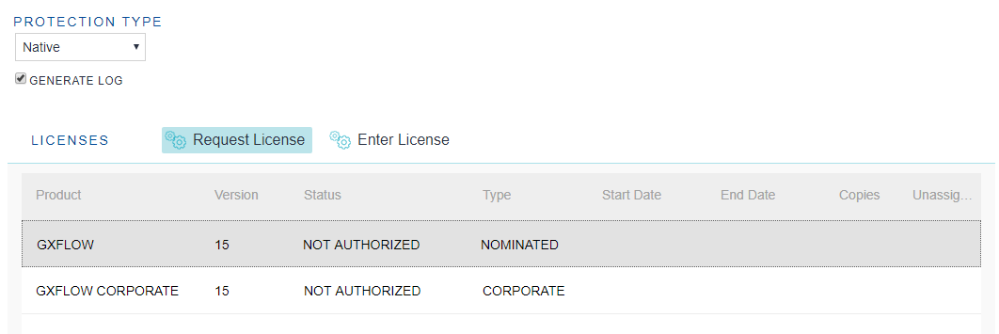

HowTo: Work with GXflow license manager
This document shows different functionalities of GXflow's license Manager, available as of GeneXus 15 Upgrade 8 or higher. Applies to both Native (default) or Protection Server methods. For more detail, see GXflow license scheme.
Summary
|
Request a license |
Request a license
1. Selected license protection methods (Native or Protection Server)
2. Selected one product from the list and click on "Request License"

Note: Make sure that popups are enabled in your browser for the GeneXus license site.
3. Log in to the GeneXus license site
4. Enter license information
First, check that the product and version are the ones you want to use; next, enter the license request information. The type (New Authorization for new licenses), the number of licenses you need, and the time restriction (if Limited is selected, you need to enter the number of days the license will be valid), are requested.
5. Finish the request process
Enter a license
This process is valid to enter new licenses requested and also to enter modifications in active licenses (Change Restrictions or Add Licenses)
1. Select one product from the list and click on "Enter License"
2. Enter Site Key
In the dialog box, enter the Site Key received by email from GeneXus with the licenses.
Change a license
When working with GXflow licenses, there are two ways to modify the licenses.
1. Add Licenses
First, the user can add licenses to an installation. The first step is the same as when requesting a license; this means you need to select the product from the list and click on the Request License button.
The changes are now displayed in the license system. You need to select the option "Add licenses."

After finishing the request process and receiving the Site Key, follow the same process explained to Enter a License to apply the changes in the licenses.
2. Change Restrictions
This process consists of changing the validity time for GXflow licenses. For the moment, this process cannot be performed in the GXflow's license Manager. When using Remote licenses, you need to use the GeneXus License Manager to change license restrictions.
Uninstall a license
1. Select one product from the list and click on "Uninstall"
2. Enter the number of copies you want to uninstall and click on "Uninstall"
3. Log in to the license system to confirm the uninstall
Manage nominated users
Go to the option License Manager > Nominated Users in the GXflow Client menu to work with nominated users.
1. Add nominated user
Write the new username in the text box on the left and click on the Add button. Unassigned copies' information will be updated.
2. Remove a nominated user
Select the user you want to remove from the list and click on the Remove button at the top of the grid. Unassigned copies' information will be updated.
3. Search for nominated users
There is a search box available on the top right corner of the screen to filter the nominated user list.
4. Export nominated users
Using this option, the nominated users are exported into an XML format file.
5. Import nominated users
In order to import a list of nominated users, first, select the option "Import" in the toolbar and then enter the XML text with the user list in the dialog box.
The XML format for the user list must be like the following:
<?xml version="1.0" encoding="UTF-8" ?>
<Users>
<User>AAA</User>
<User>BBB</User>
</Users>
4. Automatic nomination
Remember that when users are added using the GXflow API, they are automatically nominated if there are unassigned licenses available.
Change license location
GXflow licenses can be stored in two different locations: Native and Protection Server. Native licenses use the database as primary storage and are handled using the GXflow's license manager. Protection Server licenses use the registry and/or other ways and are primarily handled using the GeneXus License Manager.
The process to change the licenses location is as follows:
1. Go to License Manager > Settings
2. Select license protection method
In the drop-down menu, select the licenses protection method. If Protection Server is selected, you need to enter the server name and credentials.
Notes
- When using the Protection Server license, GeneXus Protection Server 9.7.2.14 or higher is required.
- Changing the license location sets where to store or read license information; it does not move or copy licenses from one location to another.
- You cannot write localhost as a server name.
- When completing the user, you must indicate domain\user.
Generate log
It is possible to generate a log of all the actions related to GXflow licenses, i.e., licenses requests, install/uninstall, and users nominations. (Applies only to the Native method (default). To generate a log when using the Protection Server method you must go to the Protection Server settings) To enable this, the "Generate Log" option must be checked. This option can be found in the GXflow client in License Manager -> Settings section.
In Java environments, the log information will be stored in the server log files, i.e., in a Tomcat-based application, you will find the GXflow log information in the stdout and stderr files in the Tomcat logs folder. You can find this string "com.gxflow.protection" to locate the logging information in those files.
For C# environments an additional setting is required, we need to modify the web.config file, adding the following in the <configuration> section:
- To save the log in a file
<system.diagnostics>
<trace autoflush="true" indentsize="4">
<listeners>
<add name="myListener" type="System.Diagnostics.TextWriterTraceListener"
initializeData="<LogFilePath>" />
<remove name="Default" />
</listeners>
</trace>
</system.diagnostics>
- To save the log in the TraceAxd application
<system.diagnostics>
<trace>
<listeners>
<add name="WebPageTraceListener" type="System.Web.WebPageTraceListener, System.Web,
Version=2.0.3600.0, Culture=neutral, PublicKeyToken=b03f5f7f11d50a3a"/>
</listeners>
</trace>
</system.diagnostics>
Command-line tools
Sometimes is necessary to perform some actions for the GXflow licenses in order to solve problems or set up applications. Some command-line tools are available to help with these tasks, they are added automatically when the workflow application is installed. The execution syntax is like the following:
apwflicenseutil [option] ([License])
where options is:
-c: Clean the licenses and return the licenses info
-e: Export the licenses
-i: Import the licenses. Requires the second parameter with the licenses info
Some considerations:
- Export process does NOT remove the licenses from the installation
- Import process is only available in installations using a database of the same server
- The tasks clean/export/import all the licenses information, always including both products (GXflow and GXflow Corporate)